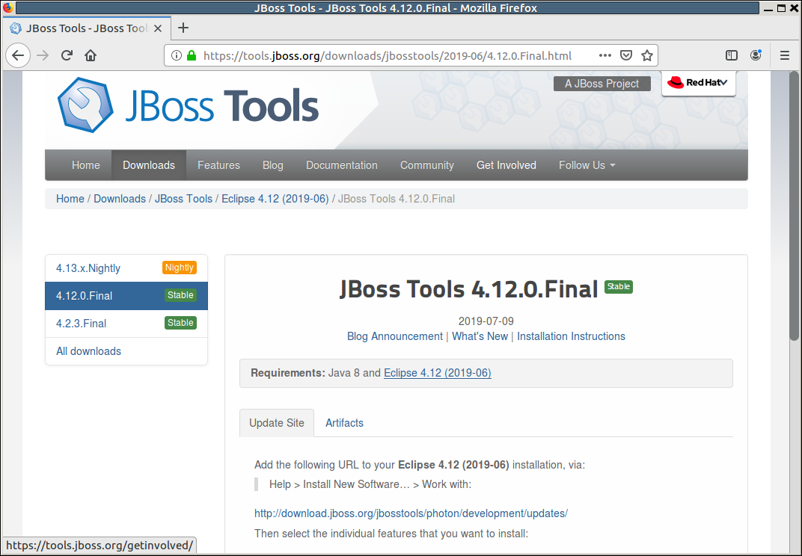
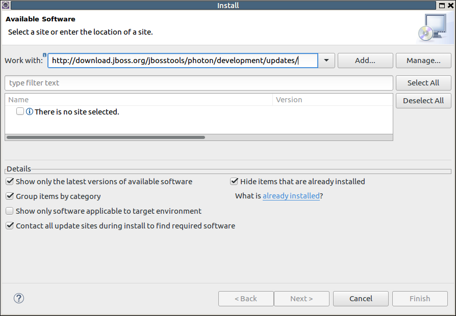
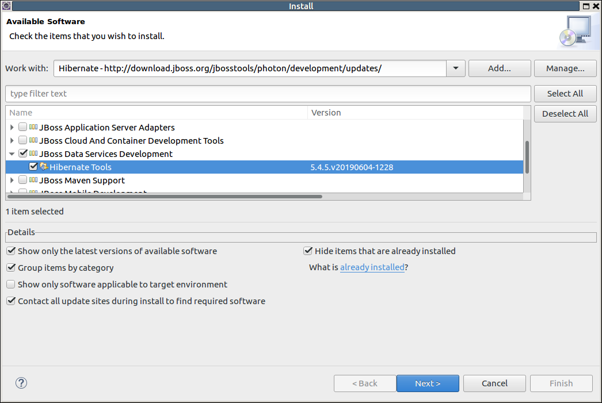
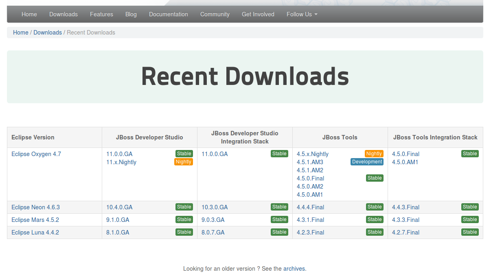
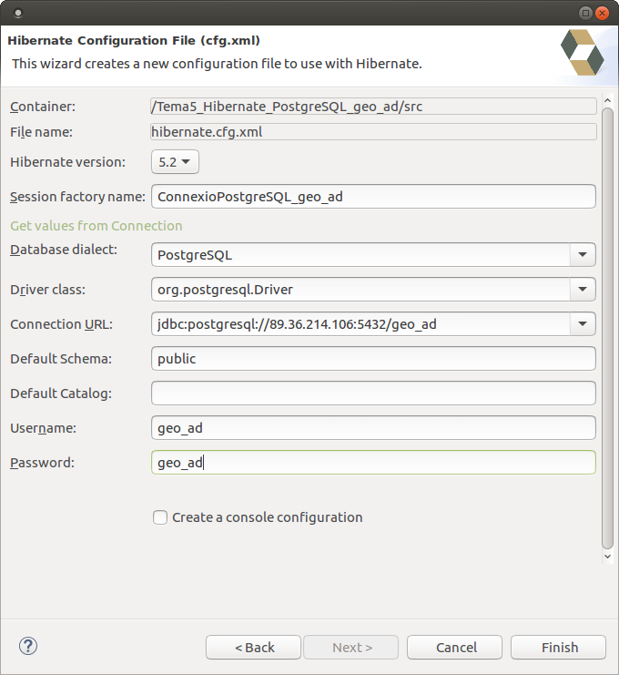
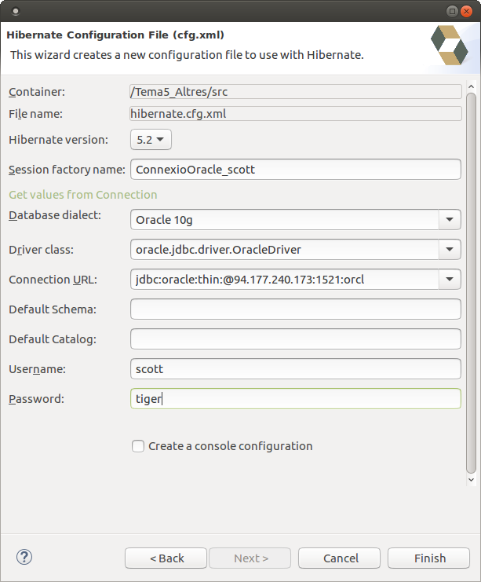
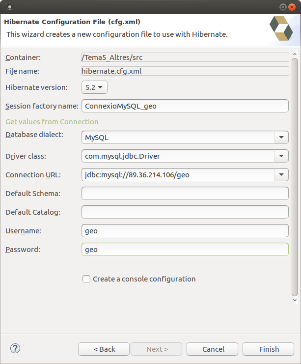

5 - Instal·lació i configuració d'Hibernate
Instal·lació
Anem ja a la instal·lació d'Hibernate en l'entorn d'Eclipse. En el moment de fer aquestos apunts, l'última versió disponible d'Eclipse és 2019-09. Tanmateix, el següent vídeo és sobre la versió Neon d'Eclipse, prou anterior a l'actual, però no oferiex cap variació substancial. l'única diferència és que hi ha versions en les quals és suficient amb arrastrar el botó Install de la versió (imatges 2 a 4 del següent vídeo). En d'altres, com la 2019-06, s'ha d'anar a Help -> Install New Software, i treballar amb l'adreça que ens dóna en http://tools.jboss.org/downloads

Com déiem, copiarem l'adreça que ens dóna l'anterior pàgina en Help -> Install New Software en el quadre de text on diu Work with i l'afegim.

Una vegada ha analitzat les utilitats de l'adreça ens deixa triar quines volem instal·lar. La que ens interessa és Hibernate Tools, que està per exemlple dins de JBoss Data Services Development

La resta de la instal·lació és idèntica a versions anteriors
En el següent vídeo està tot el procés d'instal·lació de la versió corresponent a Eclipse Neon
La instal·lació d'una versió anterior, en cas que treballem amb una versió diferent d'Eclipse, serà igual de senzilla. Només haurem d'anar a la pàgina de All downloads (http://tools.jboss.org/downloads/overview.html), on estan les versions d'Hibernate per a cada versió d'Eclipse. Millor si triem les versions estables. Ens hem de fixar en la columna de JBoss Tools. I si no està la que volem, podem anar al final de tot a: Look for an older version? See the archives

Configuració
En aquest tema, en contra del criteri seguit en els temes anteriors, ens construirem un projecte nou per a cada connexió a cada Base de Dades. Aquest projecte el configurarem per a Hibernate creant el fitxer Hibernate Configuration File (cfg.xml). Aquest fitxer contindrà tot el necessari per a realitzar la connexió a la Base de Dades que volem connectar.
El fitxer cfg.xml es crea amb l'opció New -> Other -> Hibernate -> Hibernate Configuration File (cfg.xml).
Després del fitxer de configuració, també crearem la Consola de configuració.
La primera connexió la realitzarem a PostgreSQL, a la Base de Dades de prova que estem utilitzant: geo_ad. El nom que posarem al projecte és Tema5_Hibernate_PostgreSQL_geo_ad, un nom molt llarg, però que ens diu perfectament el que volem fer. El següent vídeo il·lustra tot el procés:
Les dades de connexió a PostgreSQL són aquestes (imatges 9 a 14 del vídeo anterior). Cuideu de triar la vesió 5.2 d'Hibernate. Les posteriors en el moments de fer aquestos apunts (5.3 i 5.4) no funcionaven bé

Si la connexió la férem a Oracle, les dades de connexió variarien lleugerament:

I també ho farien per a MySQL:

No hi ha la possibilitat de connectar amb SQLite, ja que no és un servidor
Nota
Recordeu que heu de triar la versió 5.2 d'Hibernate en les pantales anteriors de crear el fitxer de configuració Hibernate Configuration File (cfg.xml). I també en la creació de la consola
Llicenciat sota la Llicència Creative Commons Reconeixement NoComercial CompartirIgual 2.5